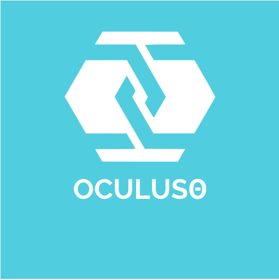

Oculusθ is our new innovation that we are developing. The impacts of this technology are that this technology will limit the amount of time patients spend in surgery, thus reducing risk. Furthermore it will result in a more efficient, easier surgery. This will benefit both the patient and the surgeon.
OculusTheta
